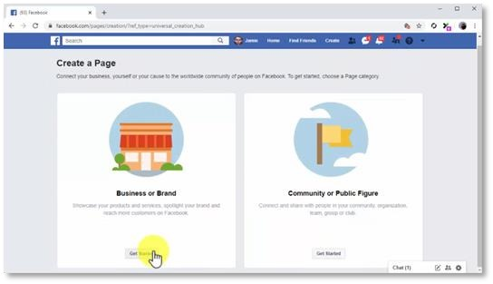
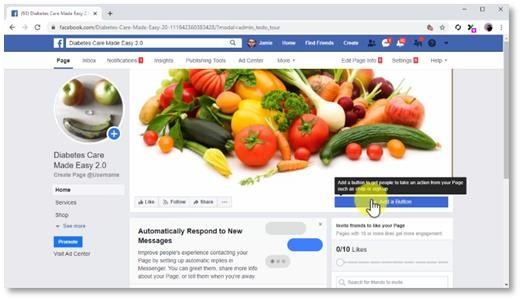
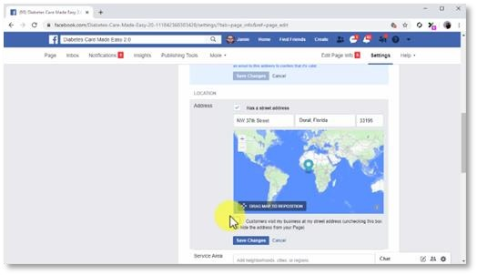

Now, let’s start at the very beginning: creating a Facebook page to promote your business. This is a very important step that you can’t afford to half bake, because a Facebook page for your business is the channel that you are going to use to build your presence and grow your audience. Having a Facebook page also makes it easier for you to set up advertising campaigns and capturing email leads on the platform! Getting Started Creating a Facebook page for your business is a free forever action, and all you need is a Facebook account and your business info at hand.
To get started,
Step -1

Simply log in to your Facebook account, click on the “create” tab in the top bar menu, and then click on the “page” option.
Step-2

Next, click on the “get started” button in the “business or brand” section. Customizing And Creating Your Page Now you are going to enter the name of your brand or business into the “page name” field. Now type the keyword that best describes your niche into the “category” field. Select a category from the results, and then click on “continue”.
Step-3

Now, you have to customize the page.First, click on “upload a profile picture” to add a profile photo to your Facebook page. Next, click on the “upload a cover photo” button to upload a cover photo to make your Facebook page much more attractive and beautiful.
Step-4
Now it is time to add a contact button and your business information to your Facebook page. To add the CTA button, click on “add a button”, and then click on the “contact you” drop-down icon. Now you are going to select the contact method you want to integrate with your page. The options include “contact us”, “send message”, “call now”, “sign up”, and “send email”.
The above things maybe proved to be tiny in your eyes but they are useful in proving your business authentic and genuine. Ignoring them may affect your brand awareness and product sales. Your choice will depend on how you want to be contacted, and each option allows you to integrate a different method. For this example, we are going to select “send message”. This method allows users to send a message directly from their Facebook accounts using Messenger. So, select your contact method, and click on “next”. In the following window, you’ll simply have to select the service users will use to contact you, and then to click on “finish”.
You can start building your page’s audience by sending invites to your Facebook friends in the “invite your friends to like your page” section.
Step-5
Alright, now it is time to add your page info. To do this, click on the “edit page info” tab on top. Start by adding your “about” info into the “description” field and click on “save changes”. Ok, now you are going to move to the “contact” section to add your contact information.
First, add your “phone number”.
Then add your “website”.
And then add your “email address”.
Remember to click on “save changes” to save your contact info. Now move to the “location” section and enter your address. In case your business doesn’t have a physical address, simply uncheck the “has a street address” option. Or, in case that you enter your business registration address but don’t take store visits, uncheck the “customers visit my business at my street address”. This is the setting you’ll choose if your business is online only. Ok, so click on “save changes” and move to the “hours” section. Here you are going to select the open hours that you’ll show on your page.
If you have a physical store or business that customers can visit, select “open on selected hours”, then select your open days and times below.
If your business is 24 hours or always online, you can select “always open”. Now, if you’re online only and don’t take live orders or consultations, select “no available hours”. You can click on “save changes” after selecting your hours. You can enter additional information in the “more” section. Let’s start with the “impressum” field, where you have to add a declaration of business ownership if you reside in a country where it is required by law. In the “products” field you can add the names of products and services that you sell.
Lastly, in the “privacy policy” field you can add your privacy policy and terms of service. This is especially useful when you take customer information on your page, or when you contact your page followers.
And this is it fellas! You just created your Facebook channel successfully, and you are ready to get your Facebook Marketing going, so don’t miss the following lesson!